27 UAV · benchmark tự dựng · Enhanced vector field / actor–critic / LDO; tube cố định.
Mở hoạt ảnh 3D · Xem tube · Dữ liệu CSV · Cấu hình · Kết quả JSON
Hoàn thành: 27/27. Số liệu là kết quả trên bản đồ tự dựng, không phải tái tạo chính xác Hình 8. Ngưỡng đỏ thể hiện giới hạn trong cấu hình. Vi phạm vận tốc thực vẫn được báo cáo dù lệnh vận tốc đã bão hòa.
Các giá trị dưới đây được đọc từ snapshot đi kèm lần chạy, không lấy từ file cấu hình đang chỉnh sửa. Tọa độ theo hệ X/Y/Z, đơn vị mét.
| Biến / thông số | Giá trị | Đơn vị | Ý nghĩa | Nguồn |
|---|---|---|---|---|
| Kích thước world | (500, 500, 300) | m | X × Y × Z; Z hướng lên | Theo paper trong cấu hình lưu |
| Giới hạn world | ((0, 0, 0), (500, 500, 300)) | m | Góc nhỏ nhất và lớn nhất; biên world được coi là vật cản | Thiết lập benchmark |
| p_start | (50, 140, 50) | m | Gốc đường tâm; UAV khởi tạo ở các tiết diện phía trong tube, theo chiều tiến về đích | Theo paper trong cấu hình lưu |
| p_goal | (460, 390, 170) | m | Điểm cuối đường tâm; đích nhiệm vụ là đĩa tiết diện cuối | Theo paper trong cấu hình lưu |
| N | 27 | UAV | Lấy từ toàn bộ initial states đã lưu | Dữ liệu lần chạy |
| Seed | 17 | — | Seed lập kế hoạch; tube đã cố định trong phép so sánh | Thiết lập benchmark |
Tọa độ và kích thước vật cản là benchmark tự dựng, không phải dữ liệu tác giả công bố trong Hình 7. Các giá trị trong bảng đều tính bằng mét.
| ID | Loại | Góc min / tâm | Góc max | Bán kính | Kích thước hộp |
|---|---|---|---|---|---|
| block_a | Hộp | (120, 320, 0) | (200, 420, 220) | — | (80, 100, 220) |
| block_b | Hộp | (200, 70, 0) | (310, 190, 210) | — | (110, 120, 210) |
| block_c | Hộp | (330, 350, 0) | (400, 440, 250) | — | (70, 90, 250) |
| sphere_a | Cầu | (90, 420, 140) | — | 35 | — |
| sphere_b | Cầu | (410, 110, 170) | — | 45 | — |
| Thông số | Giá trị | Đơn vị | Ý nghĩa |
|---|---|---|---|
| Chiều dài đường tâm | 639.195 | m | Tube thực tế được dùng trong lần chạy |
| Bán kính nhỏ nhất / lớn nhất | (28.8425, 42.6502) | m | Tính từ radii đã xuất, không dùng giới hạn thiết kế thay cho giá trị thật |
| Bán kính thiết kế tối đa | 45 | m | Giới hạn khi lập tube |
| Số mẫu đường tâm | 444 | điểm | Số điểm trong tube đã đóng băng |
| Khoảng hở tube–vật cản/world được chứng nhận | 2.09074 | m | Khoảng hở của thể tích bao tube; khác khoảng hở UAV–biên tube |
Biên tube: khoảng cách Euclidean tới mặt bên đa thức, tìm cực tiểu số trên các span liên tục; đĩa đầu/cuối là cửa vào/ra. Đây không phải chứng nhận khoảng cách toàn cục bằng số học khoảng.
| Biến | Giá trị | Đơn vị | Ý nghĩa | Nguồn |
|---|---|---|---|---|
| v_max | 11 | m/s | Ngưỡng tốc độ thực để chấm điểm và giới hạn lệnh chung | Theo paper trong cấu hình lưu |
| r_s | 5 | m | Bán kính an toàn UAV | Theo paper trong cấu hình lưu |
| r_a | 10 | m | Bán kính vùng tránh va chạm của vector field | Theo paper trong cấu hình lưu |
| l_s | 100 | m | Ngưỡng bắt đầu hút đàn trong vector field | Theo paper trong cấu hình lưu |
| l_m | 150 | m | Khoảng cách cặp lớn nhất được chấp nhận | Theo paper trong cấu hình lưu |
| d_min = 2 r_s | 10 | m | Khoảng cách cặp UAV nhỏ nhất khi chấm điểm | Suy ra từ r_s |
| Thông số | Giá trị | Đơn vị | Ý nghĩa |
|---|---|---|---|
| Bố trí khởi tạo | (16, 30, 44) | m dọc đường tâm | Các tiết diện đặt UAV ban đầu |
| Khoảng cách lưới | 12 | m | Mỗi tiết diện dùng lưới 3 × 3 trong cấu hình hiện tại |
| Tốc độ khởi tạo cấu hình | 0 | m/s | Bảng dưới là vận tốc thực đã lưu; không suy ra trạng thái bộ lọc từ giá trị này |
| dt plant / inner | 0.01 | s | Bước tích phân của cùng plant và inner loop |
| Thời gian mô phỏng tối đa | 100 | s | Giới hạn thời gian nhiệm vụ |
| Khoảng ghi frame | 0.2 | s | Replay ghi thưa hơn metrics; metrics được đo mỗi dt |
ID bắt đầu từ 0. v(0) là vận tốc thực; ζ(0) là trạng thái bộ lọc lệnh của inner loop, có thể khác 0 dù UAV đứng yên. Các trạng thái thích nghi còn lại được giữ trong initial_state.json.
| ID | p(0) — m | v(0) — m/s | ζ(0) — m/s |
|---|---|---|---|
| 0 | (57.6014, 158.882, 61.0751) | (-0, 0, 0) | (-1.11, 8.13616, 7.31921) |
| 1 | (57.1685, 158.61, 49.086) | (-0, 0, -0) | (-1.09954, 10.9423, -0.238732) |
| 2 | (56.7356, 158.337, 37.0969) | (-0, 0, -0) | (-0.566488, 8.13721, -7.38003) |
| 3 | (63.9878, 148.722, 61.0751) | (0, 0, 0) | (4.0849, 2.55501, 9.88866) |
| 4 | (63.5549, 148.45, 49.086) | (0, 0, -0) | (6.11103, 3.82928, -0.346962) |
| 5 | (63.122, 148.178, 37.0969) | (0, 0, -0) | (4.43775, 2.78455, -9.67226) |
| 6 | (70.3741, 138.563, 61.0751) | (0, -0, 0) | (7.07654, -4.31366, 7.23291) |
| 7 | (69.9412, 138.291, 49.086) | (0, -0, -0) | (9.57142, -5.41539, -0.24791) |
| 8 | (69.5083, 138.019, 37.0969) | (0, -0, -0) | (7.26315, -3.84563, -7.31148) |
| 9 | (69.1322, 166.185, 60.6581) | (0, 0, 0) | (0.993521, 8.70111, 6.6561) |
| 10 | (68.9308, 166.056, 48.6605) | (0, 0, -0) | (1.12504, 10.9407, -0.187845) |
| 11 | (68.7295, 165.928, 36.6629) | (0, 0, -0) | (0.776971, 8.52218, -6.9115) |
| 12 | (75.5792, 156.064, 60.6581) | (0, 0, 0) | (5.9287, 3.7567, 8.46981) |
| 13 | (75.3778, 155.935, 48.6605) | (0, 0, -0) | (9.28515, 5.89059, -0.294963) |
| 14 | (75.1765, 155.807, 36.6629) | (0, 0, -0) | (5.61077, 3.56393, -8.76457) |
| 15 | (82.0262, 145.943, 60.6581) | (0, -0, 0) | (8.30942, -2.78666, 6.64741) |
| 16 | (81.8248, 145.814, 48.6605) | (0, -0, -0) | (10.3893, -3.60966, -0.178439) |
| 17 | (81.6235, 145.686, 36.6629) | (0, -0, -0) | (8.06087, -2.90191, -6.89936) |
| 18 | (80.6176, 173.555, 60.554) | (0, 0, 0) | (2.65354, 8.83612, 5.99013) |
| 19 | (80.6508, 173.576, 48.5541) | (0, 0, 0) | (2.76745, 10.6462, 0.00581256) |
| 20 | (80.684, 173.597, 36.5542) | (0, 0, -0) | (1.92771, 8.78698, -6.33032) |
| 21 | (87.1272, 163.474, 60.554) | (0, 0, 0) | (6.9718, 4.49408, 7.22477) |
| 22 | (87.1604, 163.495, 48.5541) | (0, 0, 0) | (9.24465, 5.96124, 0.00995105) |
| 23 | (87.1936, 163.517, 36.5542) | (0, 0, -0) | (6.49487, 4.18976, -7.82704) |
| 24 | (93.6368, 153.393, 60.554) | (0, -0, 0) | (9.0534, -1.40357, 6.08818) |
| 25 | (93.67, 153.414, 48.5541) | (0, -0, 0) | (10.7987, -2.09473, 0.00869004) |
| 26 | (93.7032, 153.436, 36.5542) | (0, -0, -0) | (8.69862, -2.03813, -6.41717) |
| Biến | Giá trị | Đơn vị | Ý nghĩa |
|---|---|---|---|
| m | 1 | kg | Khối lượng UAV |
| τ_x, τ_y, τ_z | (0.12, 0.12, 0.15) | kg/s | Hệ số drag tuyến tính |
| g | 9.81 | m/s² | Gia tốc trọng trường |
| u_max từng trục | (30, 30, 30) | N | Giới hạn component lực, không phải giới hạn norm tổng |
| Biên độ bất định | 0.15 | m/s² | Biên độ hàm bất định trong plant |
| Biên độ nhiễu | 0.25 | m/s² | Biên độ nhiễu sinus trong plant |
| Tên trong cấu hình | Giá trị | Ý nghĩa | Nguồn |
|---|---|---|---|
| P | (9.2, 9.2, 10.2) | Gain SPEM | Theo paper trong cấu hình lưu |
| C | (1.9, 1.9, 2) | Gain LDO | Theo paper trong cấu hình lưu |
| K | (1.4, 1.4, 1.5) | Gain bám vận tốc | Theo paper trong cấu hình lưu |
| gamma_a | 0.3 | Gain học actor | Theo paper trong cấu hình lưu |
| gamma_c | 0.3 | Gain học critic | Theo paper trong cấu hình lưu |
| eta1 | 1.1 | Leakage actor | Theo paper trong cấu hình lưu |
| eta2 | 1.1 | Leakage critic | Theo paper trong cấu hình lưu |
| filter_tau | 0.15 | Hằng số thời gian bộ lọc — s | Thiết lập benchmark |
| Ka | 2 | Gain hệ phụ bù bão hòa | Thiết lập benchmark |
| robust_smoothing | 0.5 | Tham số làm trơn robust term | Thiết lập benchmark |
| Q | 10 | Gain cập nhật thích nghi robust | Thiết lập benchmark |
| eta3 | 1 | Leakage robust gain | Thiết lập benchmark |
| rbf_width | 1.5 | Độ rộng RBF | Thiết lập benchmark |
| basis_norm_bound | 0.5 | Chặn norm hàm cơ sở NN sau chuẩn hóa | Thiết lập benchmark |
| stability_witness | (2, 1, 1, 1) | Các hằng số Young kiểm tra (77); không phải gain outer | Thiết lập benchmark |
| rbf_centers | (-1, 0, 1) | Tâm RBF trên đường chéo không gian đặc trưng | Thiết lập benchmark |
| feature_scales | (11, 11, 11, 11, 11, 11, 15, 15, 15) | Scale vector [v, ζ, ζ_dot] | Thiết lập benchmark |
| Tên trong cấu hình | Giá trị |
|---|---|
| vm | 11 |
| rs | 5 |
| ra | 10 |
| ls | 100 |
| lm | 150 |
| k1 | 1 |
| lp | 20 |
| k2 | 300 |
| k3 | 250 |
| k4 | 3 |
| delta_n | 0.01 |
| delta_t | 0.01 |
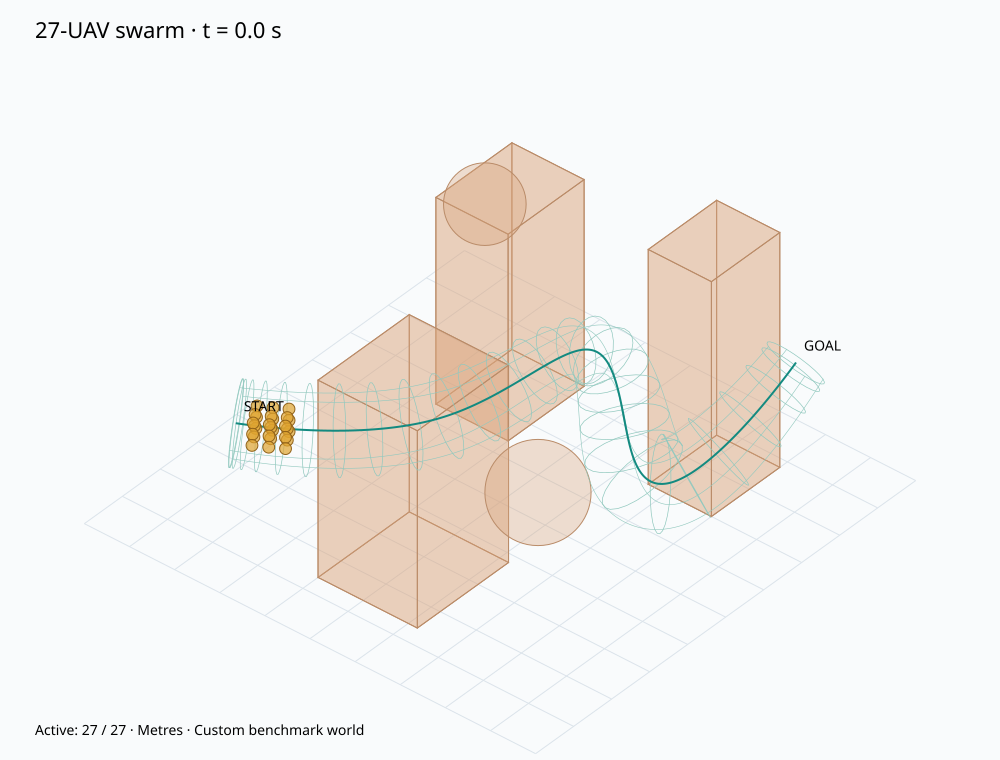
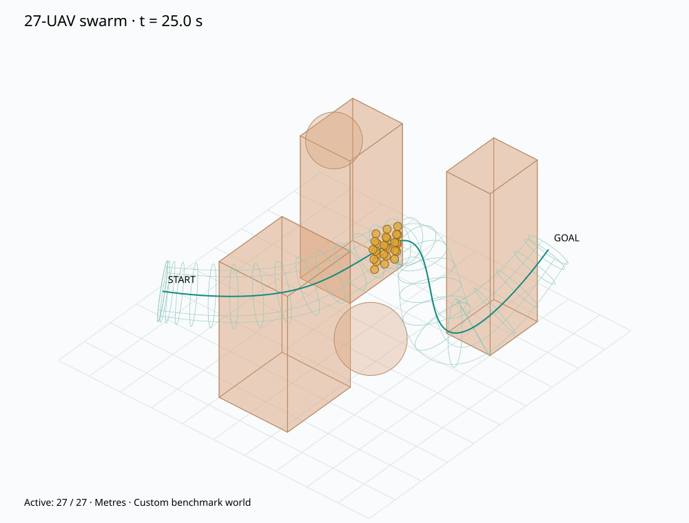
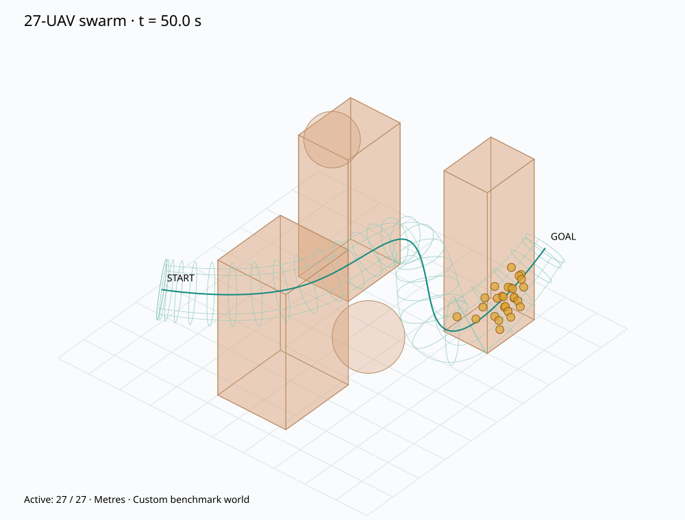
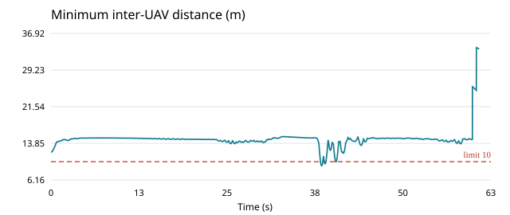
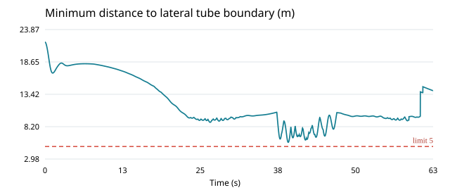
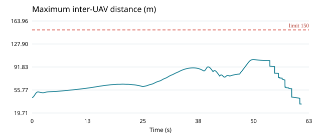
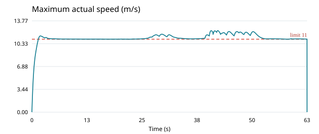
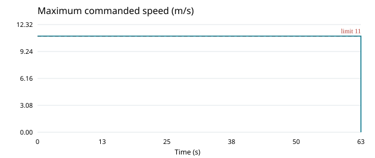
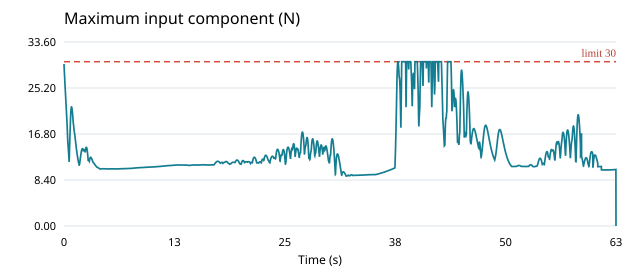
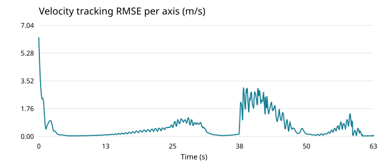
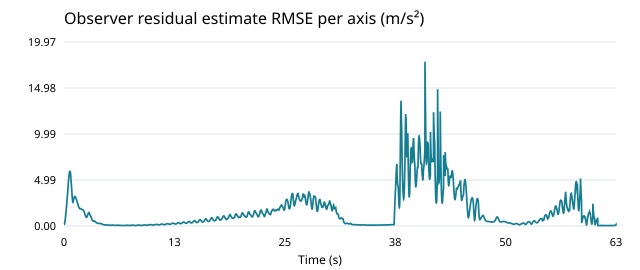
| completed | 27 |
| total | 27 |
| finish_time | 62.564215923678375 |
| min_pair_distance | 9.134826036889754 |
| max_pair_distance | 103.46156931458763 |
| min_boundary_clearance | 5.67186083086553 |
| min_obstacle_clearance | 22.810516114177798 |
| max_speed | 12.29248818557082 |
| max_command_speed | 11.000000000000004 |
| max_input | 30 |
| violation_steps | {'pair_safety': 62, 'boundary_safety': 0, 'cohesion': 0, 'actual_speed': 6109, 'obstacle_safety': 0, 'input_saturation': 0, 'command_speed': 0} |
| violation_duration_estimates | {'pair_safety': 0.62, 'boundary_safety': 0.0, 'cohesion': 0.0, 'actual_speed': 61.09, 'obstacle_safety': 0.0, 'input_saturation': 0.0, 'command_speed': 0.0} |
| constraints_passed | False |
| all_completed | True |
| error | None |
| failure_time | None |
| simulated_until | 62.57 |
| integration | explicit midpoint inner dynamics; outer command zero-order hold |
| wall_seconds | 231.23405339000055 |
| dt | 0.01 |
| boundary_metric | Numerical Euclidean distance to continuous polynomial lateral surface |
| success | False |
Active UAVs only; completed UAVs exit through terminal disk and leave the domain. Metrics sampled each dt, not a continuous-time guarantee.
Định nghĩa biên tube dùng khoảng cách hướng kính cục bộ; đây không phải SDF chính xác của toàn bộ bề mặt cong. Xem docs/PAPER_VB_IMPLEMENTATION.md để biết các giả định và giới hạn.